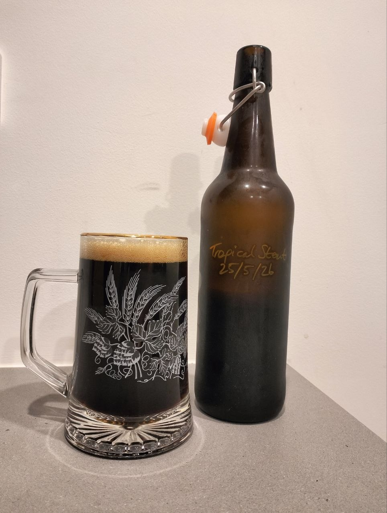
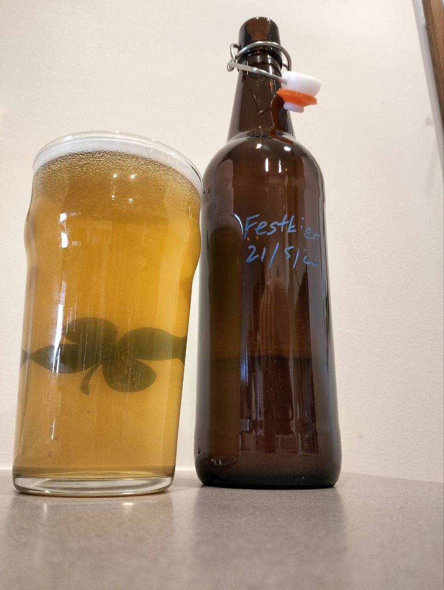

Recliner Brewing
Laid-back beers. Settle in with one!
Handcrafted homebrews from Carnegie, Victoria since 2025. Proud supporter of VICE Melbourne.
Featured Brews
Kiss Me I'm Irish
Irish Red Ale5.7%

A malty, full bodied St. Patrick's Day special, featuring high-quality Maris Otter, red malts and traditional roasted barley. Sláinte!
I Don't Like Cricket
Tropical Stout5.9%

This smooth operator has a surprising hint of licorice and none of the roastiness of heavy Winter stouts. The Caribbean style stout that's enjoyable in any weather.
VICE Draught
Low Alcohol Beer1.05%

A light, smashable traditional Australian beer with a smoky umami finish. It's like snogging the weird uncle who's done nothing but smoke meats and ciggies all arvo - and going back for seconds.
Simply The Fest
Festbier5.2%

A festive German lager. Clear, fresh, authentic and very drinkable. Get your lederhosen or dirndl ready, now it can be Oktoberfest all year round!